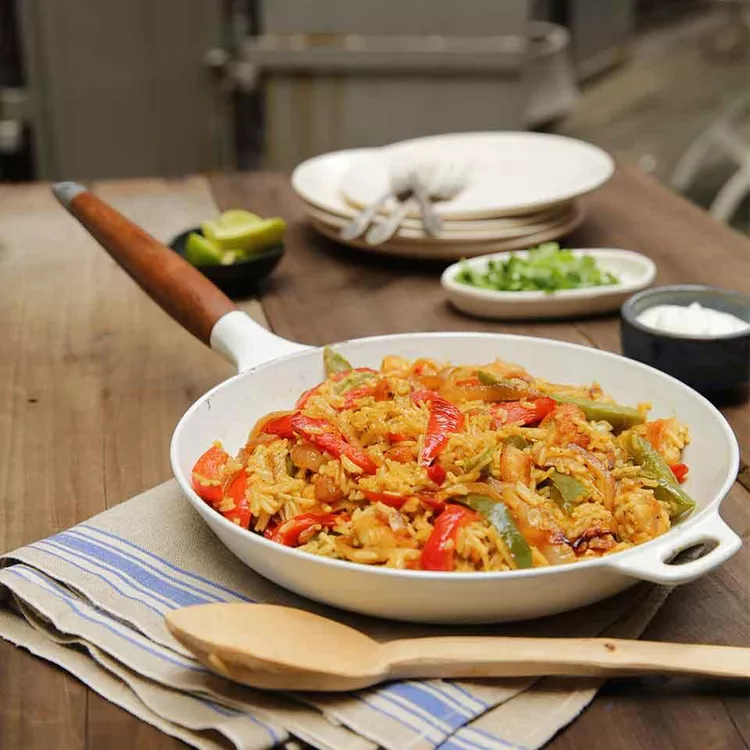

Fajita Chicken with Rice

Scrumptious, healthy chicken meal
Looking for a healthy option that doesn't take all day? This fajita flavoured chicken with rice is high in protein,
while only taking just over a half hour.
Ingredients:
- 2 tablespoons butter
- 1 pound boneless, chicken breast (diced)
- 2 bell peppers (any type)
- 1 thinly sliced medium-sized onion
- 1 teaspoon chili powder
- 2 cups water
- 1 package of broccoli rice
Instructions:
- Melt 1 tablespoon butter in a skillet over medium-high heat.
- Add the chicken and stir frequently until cooked through (about 5 minutes). Remove chicken from pan.
- Melt the remaining butter in the same skillet.
- Add the bell peppers, onion, and chili powder. Stir until crisp-tender (about 5 minutes).
- Add the water and broccoli rice. Simmer until the rice is tender (about 7 minutes).
- Add the chicken until reheated.
- Enjoy!
Home